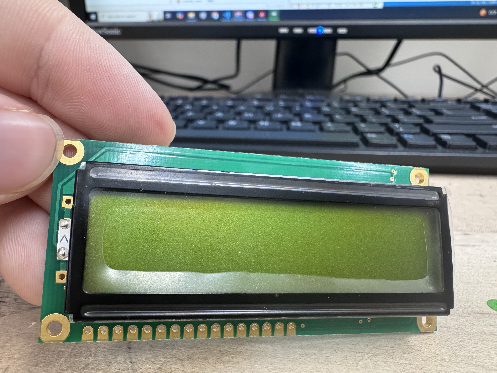
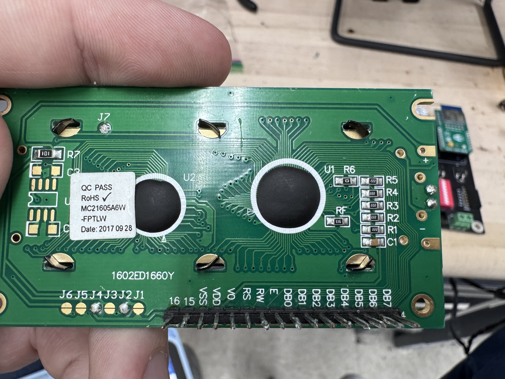
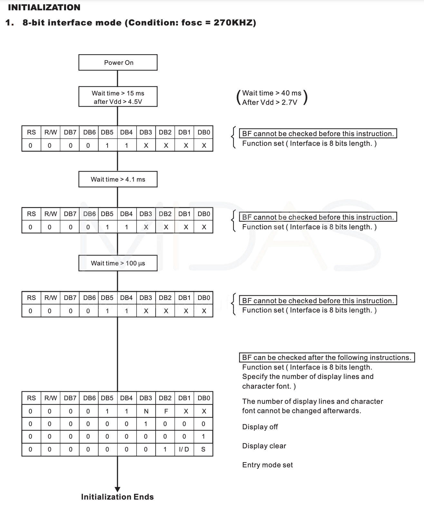
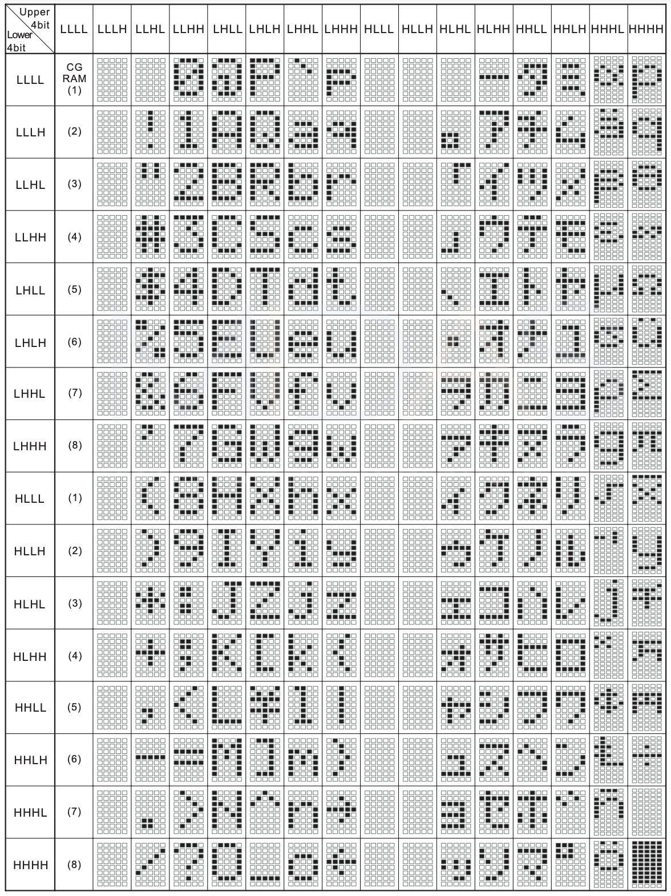
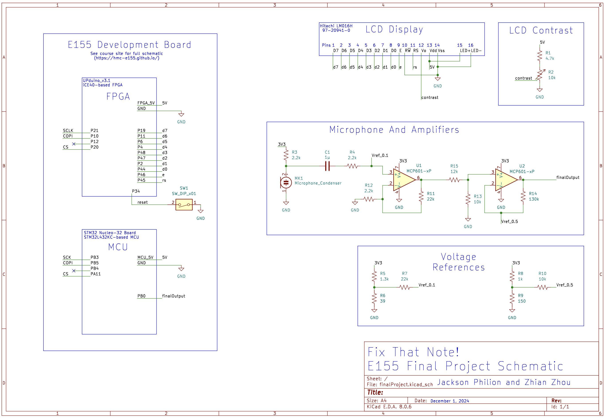

Documentation
- New Hardware in Section 1
- LCD Screen in Section 1.1
- Op Amps in Section 1.2
- Microphone in Section 1.3
- Amplifier Circuit in Section 1.4
- Schematics in Section 2
- Github Breakdown in Section 3
- Bill of Materials in Section 4
1 New Hardware
This section contains a listing of our new hardware. Each new piece is accompanied by a short description of how we chose the part and where in the system it was used. We also include a longer explanation for the most relevant part, the LCD screen.
1.1 LCD Screen
The LCD screen was our project’s primary “new hardware” addition. Pictured below, we used the MC21605A6W-FPTLW, henceforth referred to as the LCD unit. See the surprisingly helpful datasheet here, where an effective and brief user guide may be found. This screen has two lines of up to 16 characters each. See the front and back of the LCD unit pictured below:


Most notably, this LCD unit seems to be built upon the nearly-ubiquitous HD44780 controller from Hitachi, henceforth referred to as the controller. This controller has a very standardized character set, instruction set, and communication interface. The communication protocol is based on an 11-line parallel interface consisting of:
- 8 Data Bits (D7-D0)
- 1 Enable bit, pulsed high once a transmission is ready to be sent to the controller
- 1 RW bit, specifying whether the transmission is a read (high) or a write (low) command. Since we intended to only write to the LCD, we tied this bit low.
- 1 RS bit, selecting whether the transmission is a character write (high) or a controller instruction (low)
For our purposes, we included a 30 microsecond setup and hold time on all of the data and rs bits. Additionally, we included a 50 microsecond enable window, meaning that we pulsed the enable line high for a total of 50 microseconds every time we were ready to latch our next instruction. Note that these are several orders of magnitude above the minimum, which is on the scale of hundreds of nanoseconds. However, these minimums were plenty fast for our system and worked well with our divided clock on the FPGA.
Most critically, the initialization sequence for the controller is laid out plainly by the LCD unit’s data sheet. There are strange repetitions in the initialization sequence, and strict timings that appear nowhere else in the datasheet. See the initialization flow below, found on page 14 of the MC21605A6W-FPTLW data sheet:

This initialization sequence clearly lays out the required instructions and timing to write to the LCD display. Note that any unspecified timing should be followed by a pause of at least 100 microseconds.
Note that our team had challenges with our LCD setup. We found that it was critical to include the proper external circuit to control the contrast on the Vo pin. We created a circuit similar to the one shown on page 7 of the MC21605A6W-FPTLW data sheet and discovered that we could only read out the LCD properly within a very narrow window on our potentiometer. Any user attempting to implement a similar circuit should pay careful attention to testing the system across a range of values for Vo – Initializing the screen with a test character right after the boot up sequence should aid this testing and debugging.
We found the following resource incredibly useful to understanding the setup of an FPGA-based LCD controller. We found a useful guide within the resources for Ava Sherry and Leila Wiberg’s project “Vending Machine”, which linked to the following resource:
The Robot Diaries, Adding a Character LCD to an FPGA Project
While this code contains an almost complete HDL code set for a HD44780 controller, we only used it to help get us acquainted with the controller, the initialization sequence, and the timings. We ended up adapting a similar system for use in our own code, rewriting it to resemble the FSMs that E85: Digital Electronics teaches. However, we kept some of the core units from this example, namely the parameterized timing sequences and the inclusion of a flag-based counter and state progression system.
Finally, we used the following character mapping chart to write the desired characters to the LCD display. Note that H refers to high, or 1, and L refers to low, or 0. It is found on page 17 of the MC21605A6W-FPTLW data sheet.

Finally, for all future E155 students who make it this far into our report – beware the stock LCD screens that seem to proliferate throughout the digital lab. Having the sticker LM016L on the front, we could not figure out how to implement it within our project. We should have nailed down the timing using our system, and I theorize that we simply failed to dial in the contrast properly. However, we never would have gotten the LCD working if we didn’t switch to a backlit version like the unit we used. It was the only thing that gave us hope when the screen remained dark and we wondered whether the device worked at all. Although it is not necessary, it greatly increases visibility and inspires hope in the tired programmer.
For more details about how we implemented an LCD control system, see our FPGA design section.
1.2 Op Amps
Op Amps are one of the most common circuit elements in an analog circuit. Harvey Mudd students are familiar with op amps through their application in E80: Experimental Engineering and E84: Analog Electronics, and we applied them in our project to create similar differential amplifiers. We chose to use the MCP601 op amp since it is easily accessibly in our lab space, came in a DIP-8 package, and had a single-railed supply which could operate on our 3.3 Volt supply (MCP601 requires 0 and 2.7–6.0 Volt rails). See the datasheet for our part here.
1.3 Microphone
Similarly, Harvey Mudd students used a simple electret condenser microphone with their acoustic work in E80: Experimental Engineering. Given its accessibility, we chose to use the same microphone in our project. Specifically, we used the CME-1538-100LB microphone from Same Sky. The datasheet for our microphone may be found here.
As discussed in our Results section, this microphone turned out to be a poor fit for our project. Our team did not consider that many microphones have a frequency minimum, below which they cannot reliably produce an analog voltage wave output. In our case, this selected microphone lists a minimum frequency of 100 Hz. In practice, we found that the microphone was only capable of reliably reproducing frequencies above 160 Hz. In creating a version two of this device, we would explore replacing the microphone unit with the CMC-6027-32L100, which claims to be tolerant of sounds as low as 50 Hz. While the reliable frequency limit may be similarly higher, say closer to 100 Hz, this model should still improve the lower range of our readable input values.
1.4 Amplifier Circuit
The design of our amplifier circuit aims to process the signal from an external microphone and prepare it for further analysis or use in downstream systems. Our circuit, as shown in the schematics, is derived from a similar design used in the E80 lab. The electret microphone CME-1538-100LB generates an output signal that is small (typically in the tens of millivolts) and centered around zero. To optimize this signal for a 0–3.3 V range, we implemented an amplifier circuit with a total gain of approximately 100 while ensuring the output signal remains within the desired range.
Since the small microphone signal needs to be amplified to improve resolution in the 0–3.3 V range, a total gain of 100 is achieved by cascading two amplifier stages, each with a gain of about 10. The first stage introduces an offset to ensure the signal does not rail out due to a lack of a negative voltage supply. The final design of the first stage results in a gain of 10 and a DC offset of anout 1V, so the minimum voltage is 0.9V and the maximum voltage is 1.2V. The second stage further amplifies the signal with a gain of roughly 7 and a negative offset of 5.5V. Thus, the expected output range is from 0.8V to 2.9V.
2 Schematics
Our schematic may be found in the figure below. It consists of 3 main parts: the E155 development board on the left, the LCD output circuit on the top right, and the microphone and amplification circuits on the bottom right.

3 Github Breakdown
All of our source code may be found in our project’s github here. Note that it is organized as follows:
MCU/which contains:src/which contains our main.c filelib/which contains all of our given, custom, and CMSIS librariessegger/which contains the SEGGER project used to debug and upload our code
FPGA/which contains:finalProject.sv, an integrated single-file version of all of our FPGA modules.radiant_project/which contains the Lattice Radiant project we used to build, test, and download finalProject.svmodelsim_project/which contains the ModelSim project used to simulate and debug the integrated single-file solution. Note that it contains its own file,finalProject_sim.sv, which mirrors the main .sv file but is built for effective simulation with an externally fed clock signal.
notesAndExtras/which contains:demo/which contains the source files and SEGGER project for our initial 25% completion demonstration. Specifically, this prototype is made to read in an ADC value and print it out to the userKiCad/which contains the KiCad schematic file used to create our schematic abovesimulationCaptures/which contains the raw screenshot images taken of ModelSim waveforms for our simulated top.sv code, found in:simulationFiles/which contains the deprecated version of top.sv back before we transitioned to a single file system
4 Bill Of Materials
| Item | Part Number | Quantity | Unit Price | Vendor |
|---|---|---|---|---|
| Electic Microphone | CME-1538-100LB | 1 | Engineering Stockroom | |
| LCD Display | MC21605A6W-FPTLW | 1 | Engineering Stockroom | |
| Nucleo STM32L432KC Microcontroller | STM32 Nucleo-32 | 1 | E155 Kit | |
| UPDuino v3.1 ICE40 UP5K FPGA | 1 | E155 Kit | ||
| Operational Amplifier | MCP601 | 2 | Engineering Stockroom | |
| 10kohm Potentiometer | 1 | Engineering Stockroom | ||
| 39ohm Resistor | 1 | Engineering Stockroom | ||
| 150ohm Resistor | 1 | Engineering Stockroom | ||
| 1kohm Resistor | 1 | Engineering Stockroom | ||
| 1.3kohm Resistor | 1 | Engineering Stockroom | ||
| 2.2kohm Resistor | 3 | Engineering Stockroom | ||
| 4.7kohm Resistor | 1 | Engineering Stockroom | ||
| 10kohm Resistor | 2 | Engineering Stockroom | ||
| 22kohm Resistor | 3 | Engineering Stockroom | ||
| 130kohm Resistor | 1 | Engineering Stockroom | ||
| 1uF Capacitor | 1 | Engineering Stockroom | ||
| Total Cost | 0 |